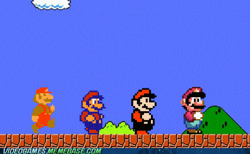

Super Mario (Japanese: スーパーマリオ Hepburn: Sūpā Mario) is a series of fantasy platform games created by Nintendo featuring their mascot, Mario. Alternatively called the Super Mario Bros. series or simply the Mario (マリオ) series, it is the central series of the greater Mario franchise. At least one Super Mario game has been released for every major Nintendo video game console. The Super Mario games follow Mario's adventures, typically in the fictional Mushroom Kingdom with Mario as the player character. He is often joined by his brother, Luigi, and occasionally by other members of the Mario cast. As in platform video games, the player runs and jumps across platforms and atop enemies in themed levels. The games have simple plots, typically with Mario rescuing the kidnapped Princess Peach from the primary antagonist, Bowser. The first title in the series, Super Mario Bros., released for the Nintendo Entertainment System (NES) in 1985, established gameplay concepts and elements prevalent in nearly every Super Mario game since. These include a multitude of power-ups and items that give Mario special magic powers such as fireball-throwing and size-changing into giant and miniature sizes. The Super Mario series is part of the greater Mario franchise. This includes other video game genres as well as media such as film, television, printed media and merchandise. Over 310 million copies of games in the Super Mario series have been sold worldwide, as of September 2015, making it the best-selling video game series in history.
Super Mario Bros.
was released for the Nintendo Entertainment System (NES) and is the first side-scrolling 2D platform game to feature Mario. It established many core Mario gameplay concepts. The brothers Mario and Luigi live in the Mushroom Kingdom, where they must rescue Princess Toadstool (later called Princess Peach) from Bowser. The game consists of eight worlds, each with four sub-levels. Though the worlds differ in themes, the fourth sub-level is always a fortress or castle that ends with a fight against Bowser (or one of his minions disguised as him).The game was successful, and is one of the best-selling video games of all time.
 Super Mario World
Super Mario World
was released for the SNES and consists of nine worlds displayed via a world map overworld. Most of the 72 levels have one exit, though some have hidden second exits. Mario's new moves include a spin jump and the rideable Yoshi who can eat enemies and either swallow or spit them out. Power-ups include the returning Super Mushroom, Fire Flower and Super Star, and the new Cape Feather, based on Super Mario Bros. 3's Super Leaf, which lets Mario and Luigi fly with a cape.
Super Mario 64
was the first 3D and open world game in the series, and a launch title for the Nintendo 64 home console. Each level, or course, is an enclosed environment where the player is free to explore in all directions without time limits. The player collects Power Stars that appear after completing tasks to unlock later courses and areas.[5] The Nintendo 64's analog stick makes an extensive repertoire of precise movements in all directions possible. The game introduced moves such as punching, triple jumping, and using a Wing Cap to fly. It is the first Super Mario series game to feature Charles Martinet's voice acting for Mario. Mario must once again save Princess Peach from Bowser, and collect up to 120 Power Stars from the paintings and return them to her castle, the overworld. There are a total of 105 Power Stars in the paintings, with 15 hidden in the castle. The game's power-ups differ from previous games, instead as three different hats with temporary powers: the Wing Cap, allowing Mario to fly; the Metal Cap, turning him into metal; and the Vanish Cap, allowing him to walk through obstacles.